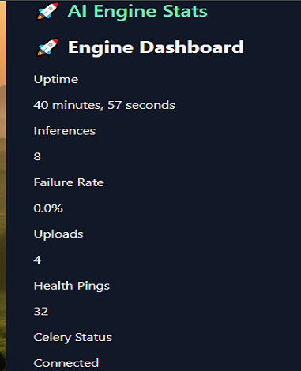
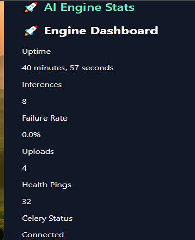

Agrosight AI Assistant
Computer vision for rural agriculture — deployable on WhatsApp, web & offline.
What It Does
Agrosight AI is a real-time crop disease detection platform. Farmers upload images via WhatsApp or web, and the system returns localized Swahili advice based on AI diagnosis. It’s designed to run lean, offline-first, and field-tested.
Tech Stack
- Frontend: Next.js (Static Export), Tailwind CSS
- Backend: FastAPI + YOLOv8 (ONNX)
- Database: Django + PostgreSQL
- Storage: Cloudinary
- Messaging: WhatsApp + Celery + Redis
- Fallback: Swahili expert templates (offline logic)
- Hosting: Vercel, Railway, Render
üé• Demo Videos
WhatsApp Assistant Demo
Web Assistant Demo
Live Screenshots
 

Live Links
üåê Web App üí¨ WhatsApp Assistant üìÅ Notion LaunchkitNotes from the Builder
This platform was built in focused solitude to serve the most overlooked users: rural farmers. Every line of code, every model, and every insight is designed for clarity, speed, and offline usability. The system runs silently — delivering intelligence, not noise.